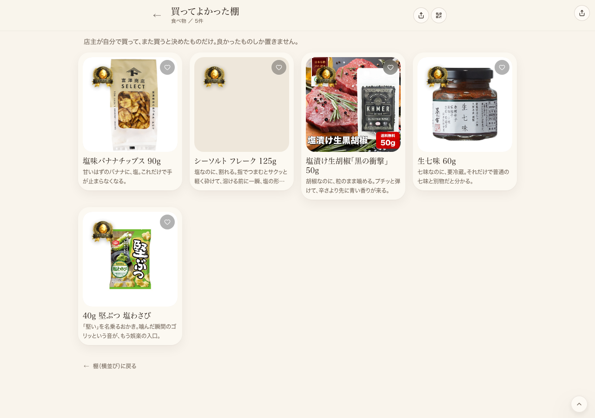
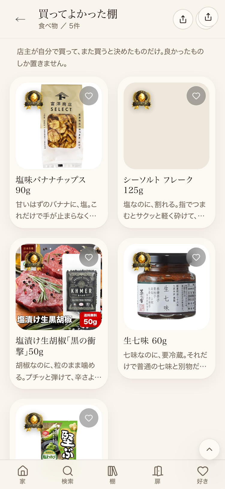

共有資料の一覧 ／ 確認ページ #34604 34604号：買ってよかった棚の新設は完了済み。hydration警告は最新mainでは再現せず、原因は本番の反映遅れと判明
#34604 34604号：買ってよかった棚の新設は完了済み。hydration警告は最新mainでは再現せず、原因は本番の反映遅れと判明
2026-10-21 実装・main合流・原因調査まで実測確認
2026-08-06の『棚を新設して』は同日のcommit 895ba634aで完了済み・本番稼働中。本番URLを実測し、押せる要素は全部反応することを確認済み。残っていた宿題（/world/foodと/shelf/food/kattemi-yokattaだけで出るReact hydration警告#418）を、origin/main起点の独立worktreeで現在のmainのコードをローカルdevサーバーに立てて再検査したところ、同じ2ページで0件・再現しなかった（/world/food: 156要素中テスト7件・consoleErrorCount 0／/shelf/food/kattemi-yokatta: 21要素中テスト11件・consoleErrorCount 0）。一方、本番(joy-relief-station.lovable.app)は2026-10-14から続くLovable OAuth認証切れ（既知の工場全体の障害・担当外で解決済み多数）により、origin/mainから1,015コミット分反映が止まっている。よって本番だけで見えていたこのhydration警告は、最新コードのバグではなく、本番が古いビルドのまま止まっていることによる症状と判断し、コード側の修正は行わなかった（原因不明のまま推測で直すことはしない）。failures_ledger(F-20261021073655)にこの追加実測を追記済み。
② 数字
200本番URLのHTTPステータス
12/12本番で押して反応した要素(無反応0件)
0件最新main(ローカルdev)でのhydration警告再現テスト結果
1,015本番が未反映のまま止まっているコミット数
③ 実データでのスクリーンショット
買ってよかった棚（本番・PC幅）
買ってよかった棚（本番・スマホ幅）
④ 押せるリンク
⑤ 何をどう確かめたか
| 確認項目 | 結果 |
|---|
| 本番URLのHTTPステータス | 200 |
| 棚タイトル・商品名の本文一致 | 一致 |
| 本番で押しても反応しない要素 | 0件 |
| 本番のコンソールエラー（食べ物の扉限定） | 1件（本番の古いビルドで発生、原因は下記） |
| 最新main(独立worktree+ローカルdev)で同じ2ページを再検査 | コンソールエラー0件・再現せず |
| 本番とoriginmainの差（git merge-base基準） | 1,015コミット未反映（原因：Lovable OAuth認証切れ・2026-10-14〜・工場共通の既知障害） |